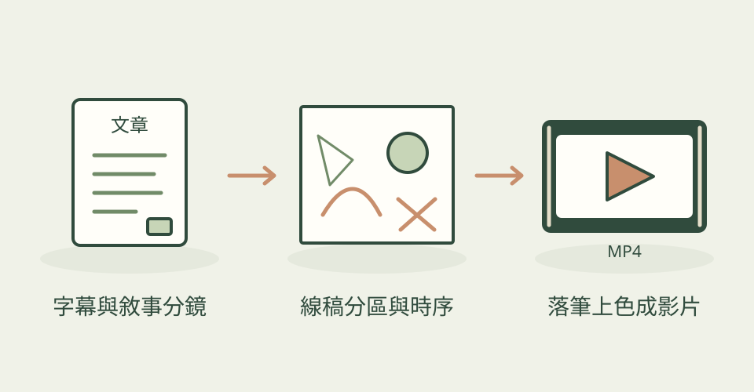

一段講解若能在說到重點時，剛好畫出對應的人物或物件，就更容易跟上。這個 Skill 讀取 SRT 字幕，先安排每幕要講的事，再把米黃色紙張上的插圖拆成可依序落筆的小區域。
它怎麼幫忙
作者的流程先確認分鏡，再確認統一風格的線稿，接著把畫面主體和字幕事件對起來。每個區域先畫墨線、再上色；後面才要登場的物件可用保護區遮住，避免提早露出。瀏覽器預覽台能調區域、順序和時間，最後由 Python 渲染 MP4，也可把多幕合成一條影片。
功能快速理解

把字幕對應線稿分區，依故事先後落筆與上色；本站功能示意，非作者成品或執行結果。
功能示意・本站繪製 放大查看可以這樣開口
這是一個可依需求修改的委託範例。
把一分鐘的雨水循環 SRT 字幕安排成兩幕白板動畫：第一幕先畫海水、太陽和水蒸氣，第二幕依序畫雲與雨。維持米黃色紙張、深灰線條和少量藍色；先讓我確認分鏡及線稿，再調整落筆時間。
適合什麼工作
適合課程作者、知識短片編輯與故事口播創作者，需要讓畫面跟隨解說逐步出現時尤其合適。
開始之前
- 準備工具
- 能讀字幕與看圖的 AI agent、Python、OpenCV、NumPy、PyAV、Pillow；本地預覽建議 Chrome 或 Edge，支援直接保存標注。線稿需要自行提供或搭配外部生圖能力。
- 使用成本
- 本地白板渲染不必呼叫付費影片 API；AI agent 與線稿生成仍依使用工具的方案和用量計費。PyAV 可編碼影片，不強制安裝系統 ffmpeg；合併多幕時優先使用 ffmpeg，否則回退 PyAV 重編碼。
- 交付內容
- 白板動畫 MP4、場景線稿、區域與時序 annotation.json
- 先留意
- 這是 2026-10-31 首次收錄，專案在 7 月已建立，並非今天發布。作者設計了逐步確認流程，不能當成只丟字幕就全自動完成。預覽台的矩形揭示只是時序代理，最後的連續筆跡由渲染器產生。本站未執行候選程式，也未測試語音合成或配音。
作者與來源
本文依作者公開說明整理，沒有實際執行這個專案。功能插圖由本站繪製，原作者範例另行標示；並非本站執行技能的測試結果。GitHub 星數為專案總量，觀察時間為 2026年10月31日 08:32（台北時間）。
首次收錄，尚無前次收藏量比較。